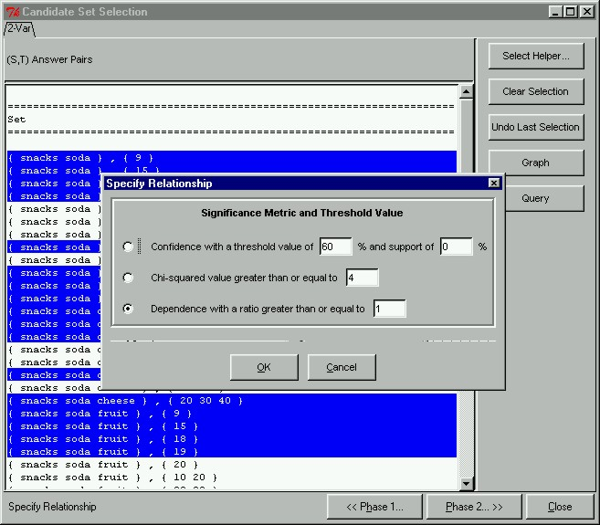

 |
Reiterating Through Phase IIA key feature displaying the flexibility of the prototype and the exploratory model is the ability to reiterate easily through phases I and II. Here, we can reiterate through Phase II by closing the Related Sets window, and opening the Specify Relationship dialog box again. This time we will change our relationship metric to dependence, and specify a significance threshold of 1.
|